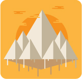
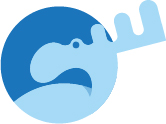
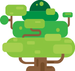
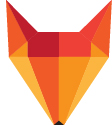

Adobe Illustrator
Illustrator er i familie med Photoshop og InDesign, selve programmet minder meget om Photoshop men forskellen er at i Illustrator arbejder man meget med figurer og shapes. Illustrator er god til hvis man skal f.eks. skal udvikle et logo eller et ny icon, da det er rigtigt nemt at lave flat designs i Illustrationer.
En af ulemperne med illustrator er at det er et vectorbaseret program, så man kan ikke tegne i frihånd, man kan kun lave figur/former. Det betyder at det kan være svære at lærer og det tager tid men det er det hele værd.
Shape Builder Tool
Det værktøj jeg har haft flest problemer med og som er bleven min bedste ven er Shape Builder Tool, ved hjælp af ekstra taster som Ctrl, Alt og Shift kan de udvikle mirakler. Man kan ved hjælp af dette værktøj både sammensætte flere figur til en og man kan slette de figurer man ikke skal bruge.
Kilder: Carstens Undervisning og selvlæring
Flat designs
Her er en række af de designs jeg har lavet undervejs de sidste halve år.
 